Blender – Voando num path
1- Comece por criar uma cena limpa de objectos (no início, o Blender começa sempre com um cubo já inserido). Clique na tecla “Delete” ou X para apagar o cubo.
2- Vá ao menu File e escolha a opção Append. Através desta função, vamos importar para este ficheiro cópias de objectos existentes noutros ficheiros .blend. Estas cópias são independentes dos objectos originais, as alterações que vamos implementar agora não se aplicam aos objectos originais.
3- Navegue na janela File Browser até encontrar o ficheiro .blend onde armazenou a nave criada no tutorial 3. Quando clicar no ficheiro, este irá dar lugar a uma estrutura de pastas com tudo aquilo que existe dentro desse ficheiro .blend (i.e. Mesh, lamps, materiais, câmara, etc.).
Para perceber melhor a natureza de um ficheiro .blend, imagine que é um ficheiro compactado com diversos ficheiros e pastas independentes. Por exemplo, na pasta Lamp vão estar armazenadas as lâmpadas existentes, na pasta Material estão os materiais criados, etc. No entanto, estes objectos também estão ligados entre si. Por exemplo, na pasta Scene estão armazenadas as Scenes criadas e uma Scene pode ter ligação a vários ficheiros (i.e. Mesh, lamps, materiais, etc.). Se importar a Scene, vai importar tudo o que estiver a ser utilizado na Scene importada (i.e. Mesh, lamps, materiais, câmara, etc.)
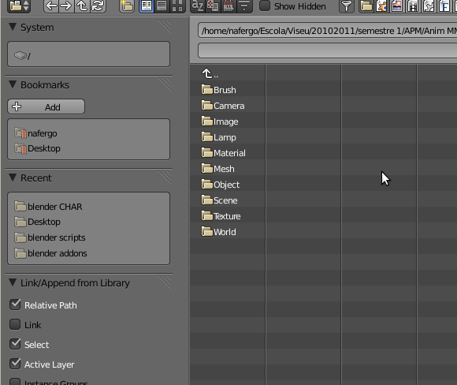4- No nosso caso, queremos importar os objectos que correspondem ao avião/nave e a cada um dos motores. Seleccione os 3 objectos (clique com SHIFT) e depois clique no botão Link/Append (topo, lado direito) para importar os objectos e materiais aplicados (caso tenha aplicado algum).
Repita o processo no ficheiro criado no tutorial 4 e importe os 5 objectos criados.
Como já deve ter reparado, não vamos importar a câmara e lâmpada existentes em cada um desses ficheiros.
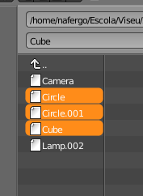 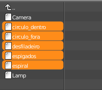5- No final da importação, deverá ter os objectos todos sobrepostos. Distribua os objectos pelos vários layers: avião/nave e motores no primeiro layer; desfiladeiro no segundo layer; espiral no terceiro; círculos no quarto layer e espigado no quinto.
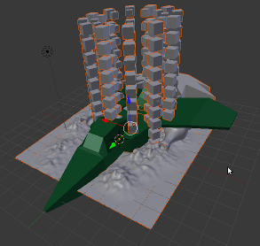6- Vá activando e desactivando os layers com conteúdo (para activar vários layers, SHIFT + clique do BER nos layers) à medida que vai redimensionando e posicionando os objectos.
No final, com todos os layers com conteúdo activos, deve obter uma sequência semelhante à apresentada na imagem abaixo.
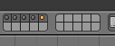 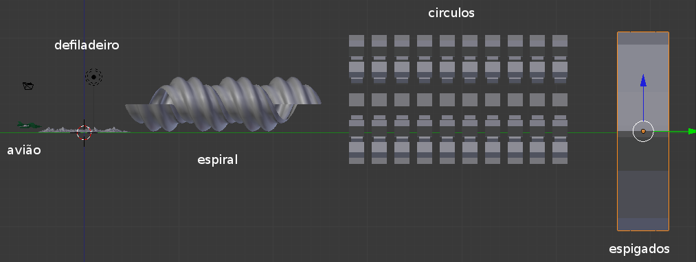Redimensione à vontade. O objectivo é fazer passar o avião/nave por esses objectos. Não é preciso que os objectos estejam exactamente alinhados, o avião não vai andar em linha recta, mas é preciso que haja espaço suficiente para o avião passar.
7- Coloque-se em Object Mode, visão de topo (NUMPAD 7) e visão ortogonal (NUMPAD 5). Adicione um Path (SHIFT+A > Curve > Path) à sua cena.
Se se aproximar do path adicionado e passar para Edit Mode, consegue ver a direcção do Path. No nosso caso, está a seguir o eixo X.
Passe para Object Mode e rode 90º em torno do eixo Z (R > Z > 90).
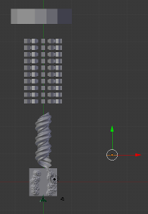 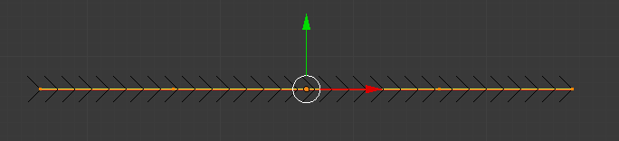8- Posicione o Path ao lado do percurso criado com os objectos e redimensione-o de forma semelhante à exibida na primeira imagem à direita.
Depois alinhe o Path com os objectos (segunda imagem à direita).
Os X marcam o início e fim do Path por nós utilizado.
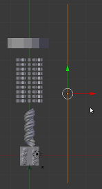 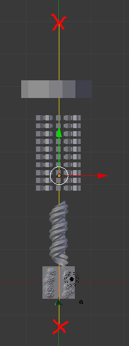9- Coloque-se na visão lateral (NUMPAD 3), visão Wireframe (Z). Seleccione o Path, passe para Edit Mode e clique 3 vezes no botão Subdivide (painel de ferramentas) para criar mais vértices no Path.
Ainda na visão lateral, seleccione os pontos necessários e desloque-os em Z para criar um caminho para a nave. Se reparar na imagem abaixo, existe uma subida na entrada da espiral e uma descida na saída. No entanto, a descida na saída vai desaparecer porque os pontos seguintes também foram movidos em Z. Mova os pontos que considerar necessários.
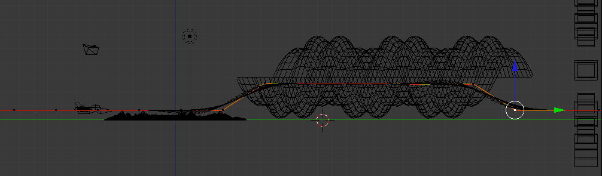No final, a nossa configuração do Path é esta:
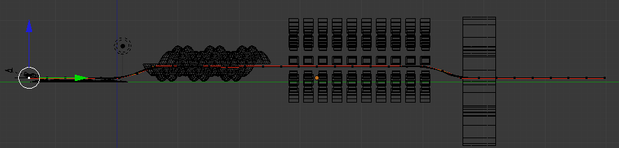10- Posicione o avião no início do path, perto do primeiro vértice. Veja na visão de topo para assegurar-se que o avião também está alinhado com o Path.
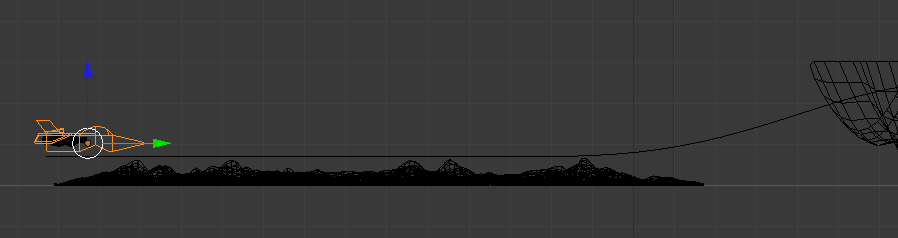11- Seleccione o objecto avião e depois o Path para criarmos um parentesco entre eles. O avião vai ser o “filho” que segue o “pai” Path. Escolha o parentesco Follow Path.
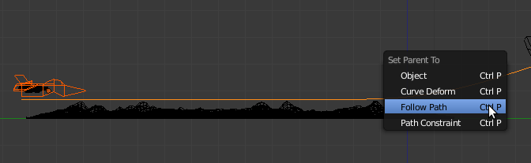12- Afaste-se de forma a conseguir visualizar todo o percurso. Em Object Mode, prima ALT+A para ver a sua animação (ESC para sair). Já deve ter reparado que existe uma pausa longa antes de o avião repetir a animação. Isto deve-se ao facto de existirem 250 frames prédefinidas para animação (durante a animação, se olhar para o rodapé do ecrã vê o número de frames) mas o Path ter uma prédefinição de 100 frames.
13- Seleccione o Path em Object Mode, vá ao painel Object Data e altere as 100 frames no Path Animation para 250.
Repita o ALT+A para ver a diferença.
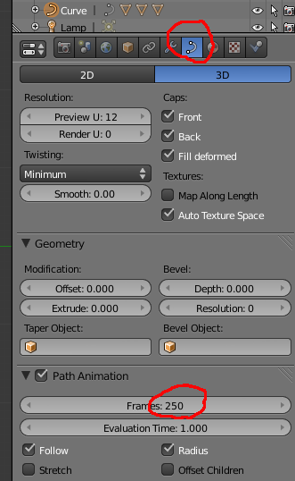14- Movimente a câmara (G) e proceda às rotações (R) necessárias até obter uma perspectiva semelhante à da imagem abaixo na visão da câmara. (NUMPAD 0).
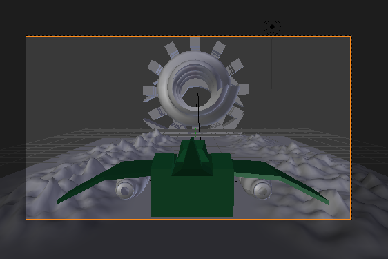 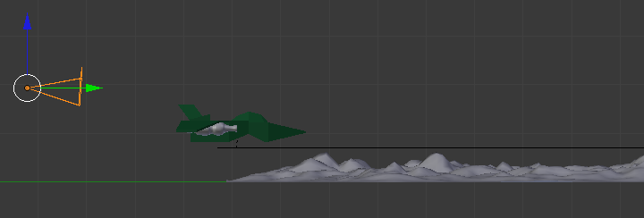15- Seleccione a câmara e depois o avião para criarmos um parentesco entre eles. A câmara vai ser o “filho” que segue o “pai” avião.
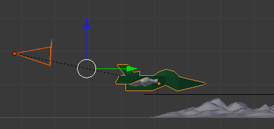16- Coloque-se no modo de visão câmara (NUMPAD 0) e depois active a animação com ALT+A.
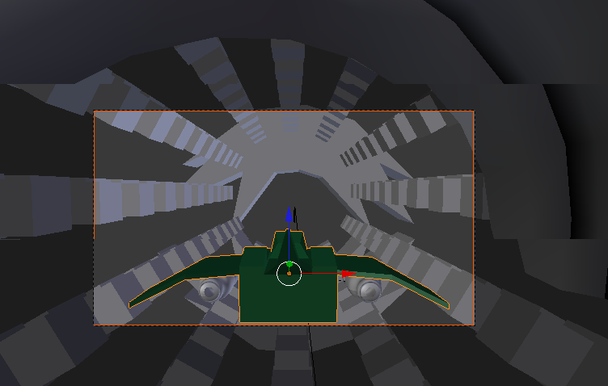17- Se necessário, proceda a ajustamentos nos vértices do Path ou na posição/dimensão dos objectos do cenário.
18- Assegure-se que está na frame 1 e em Object Mode. Seleccione o objecto “espigado” e insira uma keyframe (I) de rotação.
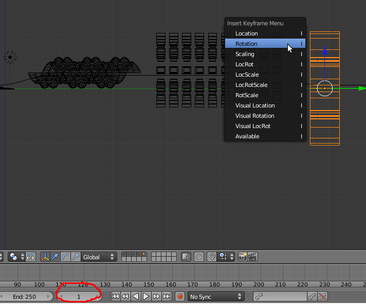19- Avance até à frame 11 (clique na seta para cima do teclado ou utilize as setas no indicador de frame). Rode o objecto 20º em Y (R > Y > 20) e insira nova keyframe (I) de rotação.
20- Ainda com o objecto “espigado” seleccionado, passe para a janela de tipo Graph Editor.
21- Nova janela apresenta uma representação em gráfico da animação que acabou de criar. À esquerda pode ver o nome do objecto que animou e o tipo de keyframe inserida.
Na coluna da esquerda, clique no Rotation. Se clicar em A selecciona todos (ou retira a selecção) de todas as keyframes de rotação do objecto.
Assegure-se que tem todas as keyframes seleccionadas (surgem num tom laranja).
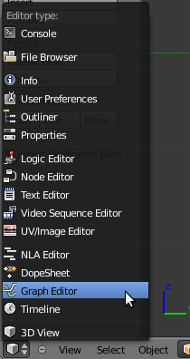No menu Key, submenu Extrapolation Mode, escolha a opção Linear Extrapolation. A extrapolação vai permitir calcular movimento com base nas keyframes seleccionadas. Neste caso, o objecto vai estar sempre a rodar à mesma velocidade sem que seja necessário inserir novas keyframes.

22- Volte à janela 3D View e repita o processo para os dois círculos de caixas que antecedem este objecto no percurso. Sugestão: para não andarem todos à mesma velocidade e na mesma direcção, insira uma rotação de 10º em Y num círculo e de -20º no outro.
Para facilitar a visualização no Graph Editor (para não estar a ver todas as linhas de animação de todos os objectos presentes na cena) active apenas as caixas necessárias no menu do lado esquerdo. Não se esqueça de clicar em cima da Rotation que pretende extrapolar e seleccionar todas as keyframes dessa rotação antes de ir ao menu activar a Linear Extrapolation.
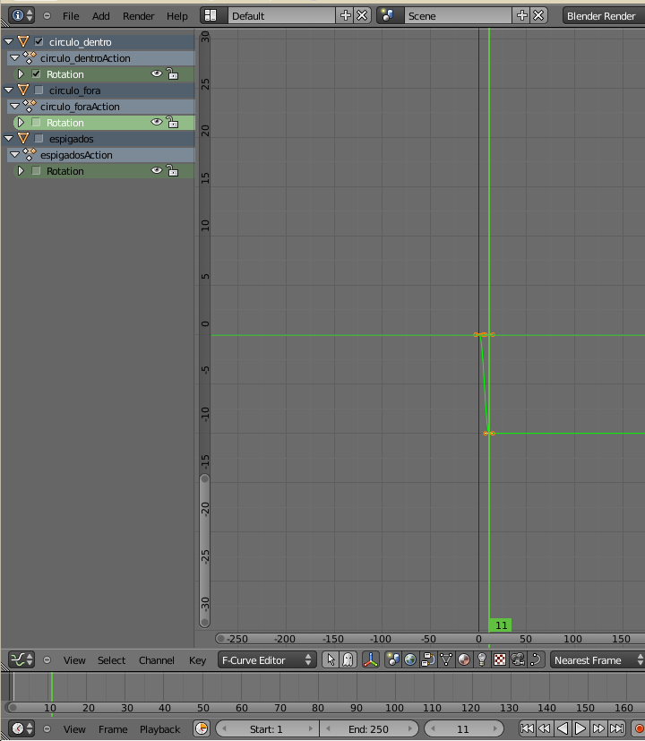23- Se voltar à janela 3D View e animar, irá reparar que os 3 objectos estão permanentemente em movimento. No entanto, os dois círculos de caixas não devem estar a rodar como esperado. Isso deve-se ao centro/origem do objecto. Como não alterámos a origem/centro do objecto, os círculos estão a rodar em torno do centro do primeiro cubo.
24- Em Object Mode, seleccione um dos círculos de caixas, clique no botão Origin (painel de ferramentas) e escolha a opção Origin to Geometry para o centro/origem do objecto ser o ponto mediano entre todos os vértices do objecto. Ou seja, para o centro/origem ser o centro do primeiro círculo de cubos. Repita o processo para o outro círculo.
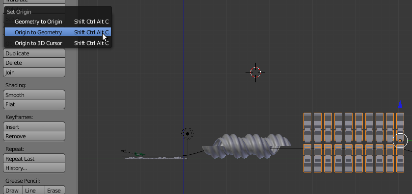25- Seleccione cada um dos objectos e atribua um material colorido.
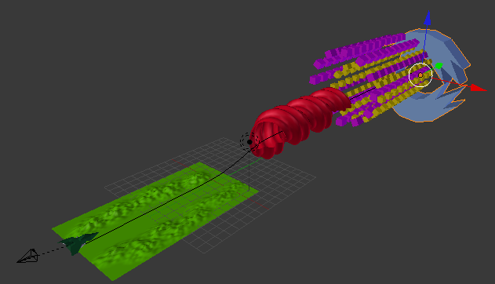26- Seleccione a lâmpada existente e escolha o tipo Hemi. Não irá sem uma iluminação muito interessante (não tem sombras, por exemplo..) mas permitirá ver tudo claramente.
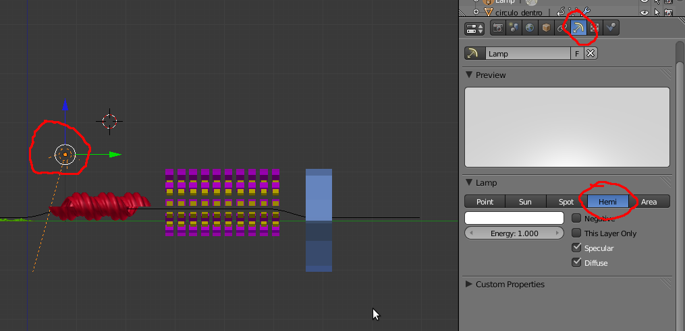27- Vá ao painel World e active a opção Blend Sky para que o fundo da imagem a renderizar seja a transição entre a cor definida para a linha de horizonte (escolha um azul mais escuro) e a cor do zénite (escolha um azul mais claro). Active o Real Sky se quiser renderizar com um horizonte real.
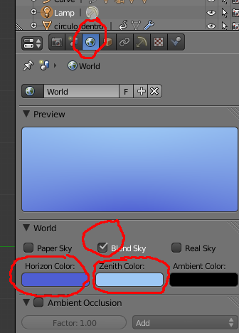28- Vá ao painel Render e verifique as suas configurações. Se não alterou as pré-definições, deverá estar pronto a renderizar com uma resolução de 50% de 1920x1080, 250 frames (começando na 1 e terminando na 250), a 24 frames por segundo (FPS).
Defina a pasta para onde a renderização será enviada. Por pré-definição está configurada para a pasta TMP.
Escolha o tipo de ficheiro que pretende criar. No nosso caso, escolhemos AVI JPEG.
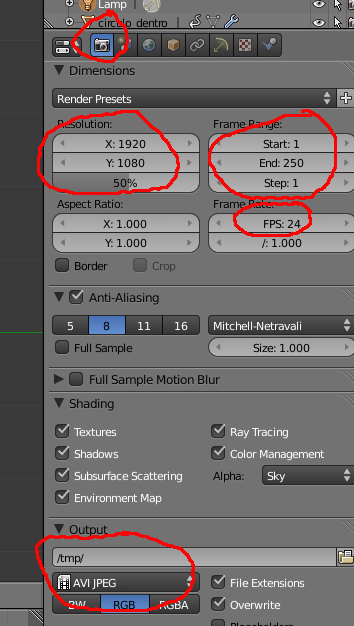29- Clique em Animation e espere... Quando terminar de renderizar deverá ter um ficheiro AVI na pasta que escolheu com cerca de 10 segundos.
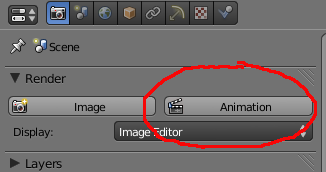Sugestões
Melhorar a iluminação (experimente trocar a Hemi pelo Sun ou adicionar várias Spots), modificar os materiais, melhorar a modelação...
Inserir novas câmaras e renderizar de outras perspectivas. Se quiser adicionar outras câmaras, tenha em atenção que a renderização é feita na câmara activa. Ou seja , se adicionar simplesmente outra câmara e mandar renderizar vai obter o mesmo resultado. Para definir a câmara activa, seleccione a câmara em Object Mode e clique em CTRL+NUMPAD 0.